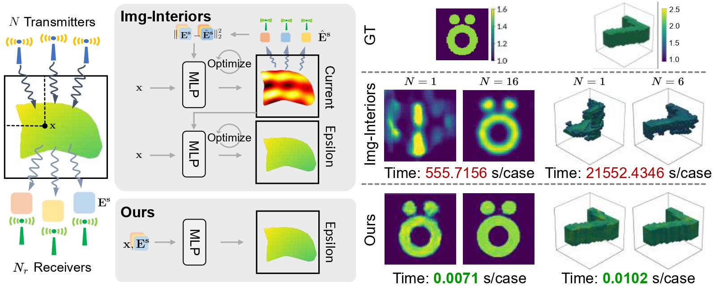
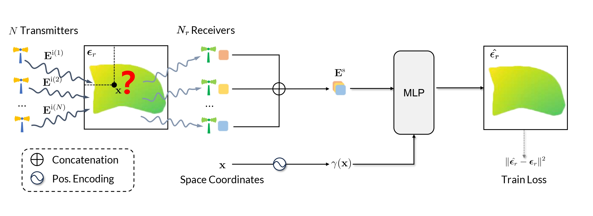
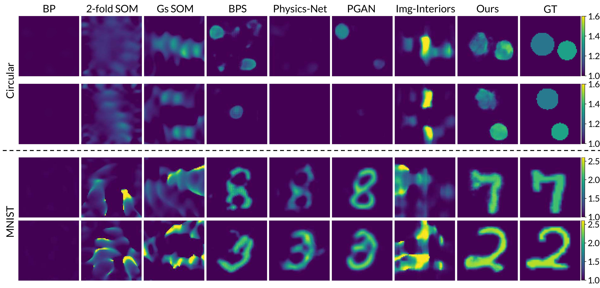
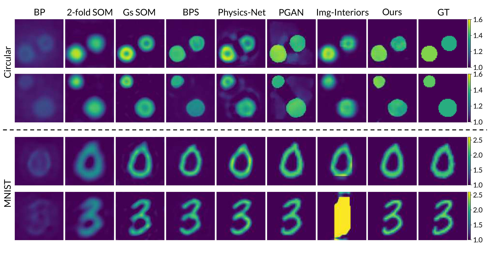
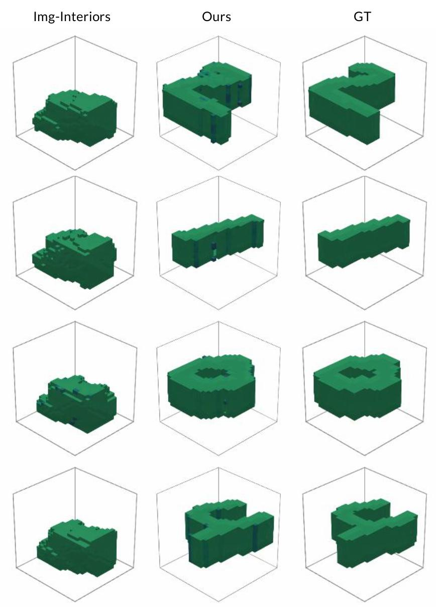
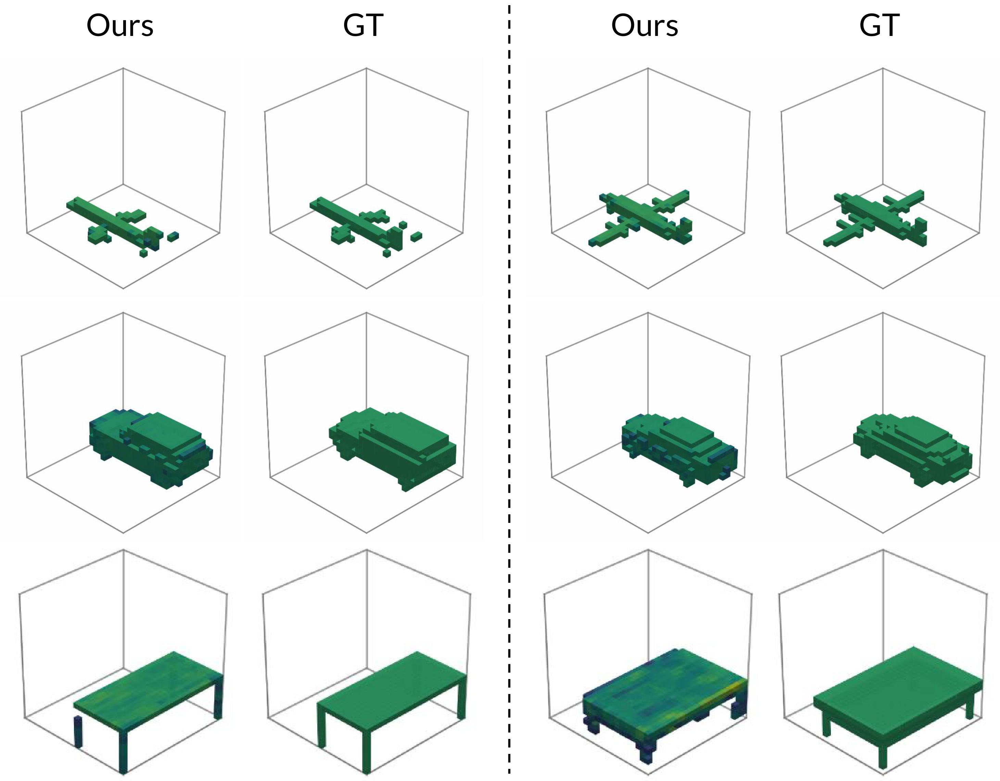

TL;DR:
We propose a fully end-to-end, data-driven framework for Electromagnetic Inverse Scattering Problem. It uses data priors to overcome the information scarcity inherent in sparse transmitter setups. Our method thereby achieves robust performance even with a single transmitter and enables real-time inference with over $70,000\times$ speed up.

Solving Electromagnetic Inverse Scattering Problems (EISP) is fundamental in applications such as medical imaging, where the goal is to reconstruct the relative permittivity from scattered electromagnetic field. This inverse process is inherently ill-posed and highly nonlinear, making it particularly challenging, especially under sparse transmitter setups, e.g., with only one transmitter. A recent machine learning-based approach, Img-Interiors, shows promising results by leveraging continuous implicit functions. However, it requires time-consuming case-specific optimization and fails under sparse transmitter setups. To address these limitations, we revisit EISP from a data-driven perspective. The scarcity of transmitters leads to an insufficient amount of measured data, which fails to capture adequate physical information for stable inversion. Built on this insight, we propose a fully end-to-end and data-driven framework that predicts the relative permittivity of scatterers from measured fields, leveraging data distribution priors to compensate for the lack of physical information. This design enables data-driven training and feed-forward prediction of relative permittivity while maintaining strong robustness to transmitter sparsity. Extensive experiments show that our method outperforms state-of-the-art approaches in reconstruction accuracy and robustness. Notably, it achieves high-quality results even with a single transmitter, a setting where previous methods consistently fail. This work offers a fundamentally new perspective on electromagnetic inverse scattering and represents a major step toward cost-effective practical solutions for electromagnetic imaging.

Overview of our method. Our pipeline is built around an MLP that serves as the inverse solver. Given the scattered field measurements $\mathbf{E}^\text{s}$ from all transmitters and receivers, along with a spatial query $\bf{x}$, the MLP directly predicts thee relative permittivity $\hat{\boldsymbol{\epsilon}_r}({\bf{x}})$. To enhance spatial expressiveness, we apply positional encoding $\gamma({\bf{x}})$ to the query position. During training, dashed lines indicate the supervision signals applied.
Qualitative comparison under the single-transmitter setting:

Qualitative comparison under the multiple-transmitter setting:

Qualitative comparison under the single-transmitter setting for 3D reconstruction on 3D MNIST dataset:

Qualitative comparison under the single-transmitter setting for 3D reconstruction on 3D ShapeNet dataset:

@article{cheng2025electromagneticinversescatteringsingle,
author = {Yizhe Cheng and Chunxun Tian and Haoru Wang and Wentao Zhu and Xiaoxuan Ma and Yizhou Wang},
title = {Electromagnetic Inverse Scattering from a Single Transmitter},
journal = {arXiv preprint arXiv:2506.21349},
year = {2025},
}